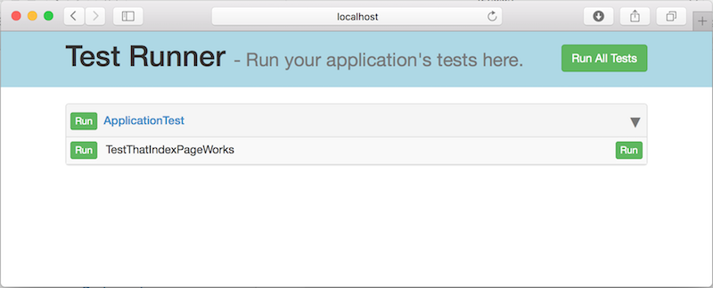
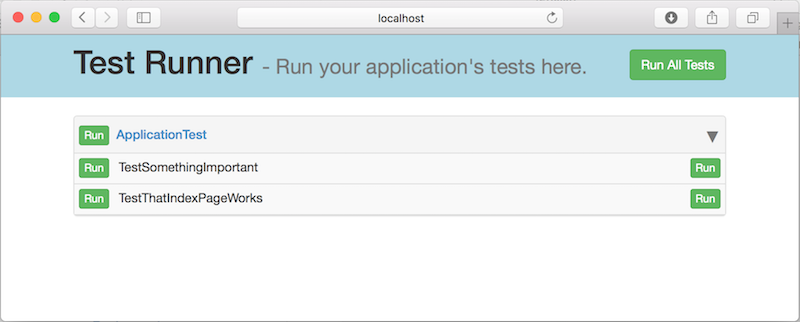
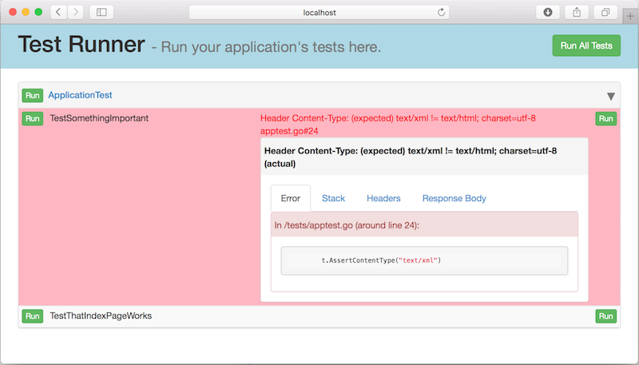
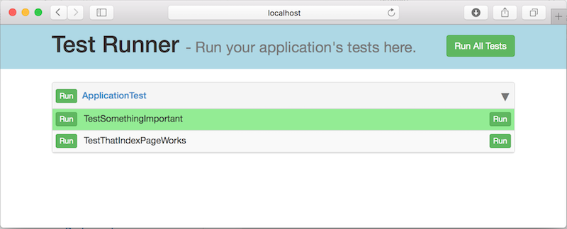

Revel provides a testing framework that makes it easy to write and run functional tests against an application.
The skeleton app comes with a simple apptest.go to use as a starting point.
Testing Overview
Tests needs to be in the tests/ directory:
myapp/
app/
conf/
public/
tests/ <----
A simple test file looks like the following:
import (
"github.com/revel/revel/testing"
)
// Must Embed `testing.TestSuite`
type MyAppTest struct {
testing.TestSuite
}
// Run this before a request
func (t *MyAppTest) Before() {
println("Set up")
}
// Run this after request
func (t *MyAppTest) After() {
println("Tear down")
}
// Check main page is kinda there
func (t *MyAppTest) TestIndexPage() {
t.Get("/")
t.AssertOk()
t.AssertContentType("text/html")
}
// Check if robots.txt exists
func (t *MyAppTest) TestRobotsPage() {
t.Get("/robots.txt")
t.AssertOk()
t.AssertContentType("text/html")
}
// Will not appear in panel as it does not start with `Test`.
func (t *MyAppTest) TEstFavIcon() {
t.Get("/favicon.ico")
t.AssertOk()
t.AssertContentType("text/html")
}The example code above shows a few things:
- A test suite is any struct that embeds
TestSuite Before()andAfter()are invoked before and after every test method, if present.- The
TestSuiteprovides helpers for issuing requests to your application and for asserting things about the response. - An assertion failure generates a panic, which is caught by the test harness.
- Each test method must contain the case-sensitive prefix ‘Test’
You may run this test in two ways:
- Interactively - from your web browser, useful during test development.
- Non-interactively - from the command line, useful for integrating with a continuous build.
Developing a test suite
To create your own test suite, define a struct that embeds TestSuite, which
provides a HTTP client and a number of helper methods for making requests to the application.
type TestSuite struct {
Client *http.Client
Response *http.Response
ResponseBody []byte
}
// Some request methods
func (t *TestSuite) Get(path string)
func (t *TestSuite) Post(path string, contentType string, reader io.Reader)
func (t *TestSuite) PostForm(path string, data url.Values)
func (t *TestSuite) NewTestRequest(req *http.Request) *TestRequest
// Some assertion methods
func (t *TestSuite) AssertOk()
func (t *TestSuite) AssertContentType(contentType string)
func (t *TestSuite) Assert(exp bool)
func (t *TestSuite) Assertf(exp bool, formatStr string, args ...interface{})All request methods behave similarly:
- They accept a path (e.g.
/users/) - They issue the
Requestto the app server - They store the response in the
Responsemember. - They read the full response body into the
ResponseBodymember.
If the developer wishes to use a customized HTTP Client instead of the default http.DefaultClient, they should replace it in the Before() method.
All assertions raise a panic if they are not fulfilled. All panics are caught by the test harness and presented as errors.
Running a test suite
In order to run any tests, the testrunner module must be activated. This is done by including the following line in your app.conf:
module.testrunner = github.com/revel/modules/testrunner
You must also import the test module’s routes, by adding this line to your routes file:
module:testrunner
With that done, the tests may be run interactively at the /@tests url, or non-interactively on the command line.
Running tests interactively
To take advantage of Revel’s hot-compile functionality, an interactive test runner is provided for quick edit-refresh cycles.
For example, the developer loads /@tests in their browser:

Then they add a test method:
func (t AppTest) TestSomethingImportant() {
t.Get("/")
t.AssertOk()
t.AssertContentType("text/xml")
}Then they refresh their browser to see their new test:

They run the test:

Uh oh. It doesn’t work. They fix the code to expect a content type of “text/html” instead of “text/xml”:
t.AssertContentType("text/html")Then they re-run the test:

Success.
Running tests non-interactively
The Revel command line tool provides a test command that allows all application tests to be run from the command line.
Here is an example session:
$ revel test github.com/revel/examples/booking dev
~
~ revel! http://revel.github.io
~
INFO 2012/11/09 19:21:02 revel.go:237: Loaded module testrunner
Open DB
Listening on port 9000...
INFO 2012/11/09 19:21:06 test.go:95: Testing Booking example (github.com/revel/examples/booking) in dev mode
Go to /@tests to run the tests.
1 test suite to run.
AppTest PASSED 0s
All Tests Passed.
You can also run a single test suite, or method within that suite, with a period-separated parameter:
$ revel test github.com/revel/examples/booking dev ApplicationTest
$ revel test github.com/revel/examples/booking dev ApplicationTest.TestThatIndexPageWorks
In the console only a simple PASSED/FAILED overview by test suite is displayed. The tool writes more detailed results to the filesystem:
$ cd src/github.com/revel/examples/booking
$ find test-results
test-results
test-results/app.log
test-results/AppTest.passed.html
test-results/result.passed
It writes three different things:
- The application’s stdout and stderr are redirected to
app.log - One HTML file per test suite is written, describing the tests that passed or failed.
- Either
result.passedorresult.failedis written, depending on the overall success.
There are two suggested mechanisms for integrating this into a continuous build:
- Check the return code, which is 0 for a successful test run and non-zero otherwise.
- Require the presence of
result.successafter the run, or disallow the presence ofresult.failed.
Implementation notes
What Revel does is:
- Scan the test source code for types that (transitively) embed TestSuite
- Set the
revel.TestSuitesvariable to a list of those types in the generated main.go file. - On demand, uses reflection to find all methods beginning with “Test” on the TestSuite types, and invokes them to run the test.
- Catches panics from bugs or failed assertions and displays the error helpfully.
Testing code is only built when the special testrunner module is activated.
Areas for development
The testing framework could use the following improvements:
- Fixtures for populating a datastore with test data.
- Loggers that write to a file (instead of stderr / stdout) should also be redirected to
test-results/app.log
- See the godocs for
Testing